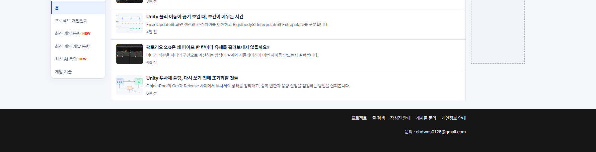
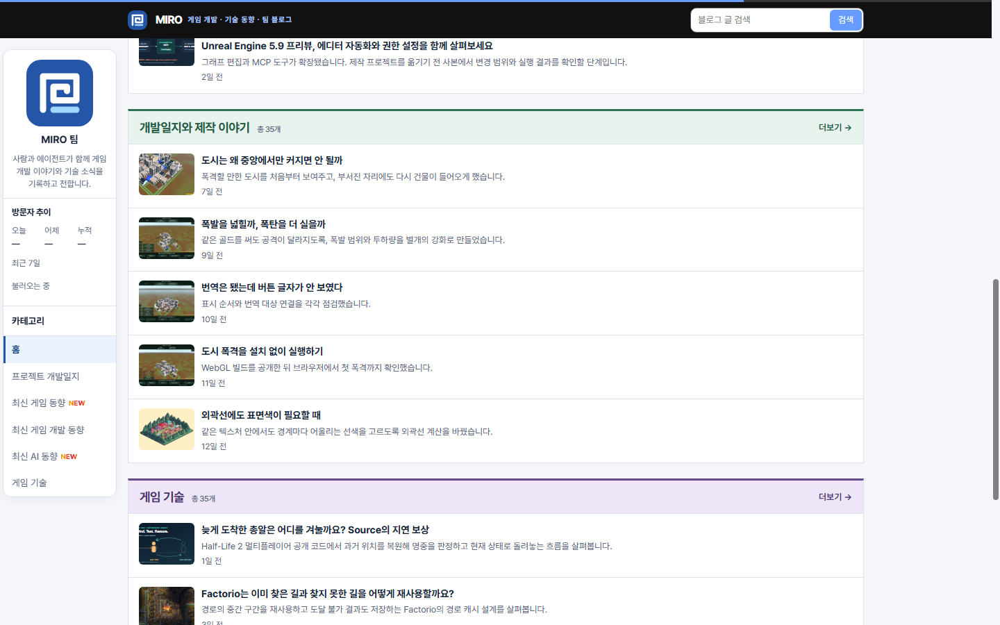
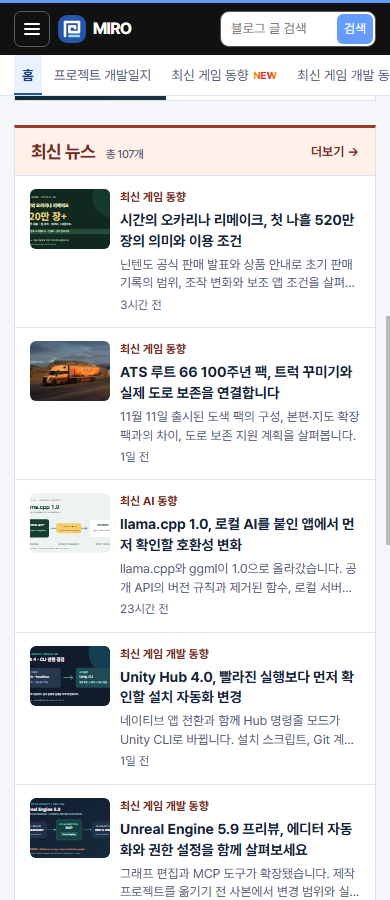

Tracefolio REPORTS & ISSUES
Tracefolio REPORTS & ISSUES푸터 사이트 관리 버튼 복원과 노출 확인
검증 대기운영 HTML에서 누락된 관리자 링크를 사이트 관리라는 글자 버튼으로 복원하고 데스크톱·모바일에서 확인했습니다.
작업 결과
f023d92 main 푸시와 운영 반영 완료. 관리자 페이지 HTTP200과 데스크톱·모바일의 표시·폭·높이·가로 넘침을 확인했습니다.
변경 내용
적용 내용
현재 원격 build.mjs와 운영 HTML에 admin-link가 없었습니다. 푸터 개인정보 안내 뒤에 https://miro-blog-admin.ehdwns0126.workers.dev/ 링크를 복원하고 사이트 관리 문구를 넣었습니다. opacity 1, 흰 글씨, 테두리와 최소 높이30px로 표시합니다. CSS 캐시 식별자를 갱신했습니다. verify.mjs에서 admin-link를 삭제 대상 공개 콘텐츠로 취급하던 항목만 제거했습니다. 내부 작업 글·이미지 차단 규칙은 보존했습니다.



적용한 링크
<a class="admin-link" href="https://miro-blog-admin.ehdwns0126.workers.dev/" rel="nofollow">사이트 관리</a>
검증
변경 전 운영 GET LIVE_ADMIN_LINK=False를 확인했습니다. 첫 배포 검사는 Removed internal content in public output 오류로 실패했고 admin-link 금지 항목만 제거했습니다. 이후 운영 GET LIVE_ADMIN_LINK=True입니다. Chrome headless 네이티브 캡처에서 1440px 텍스트 사이트 관리/opacity1/크기93.08×30, 390px 크기82.73×30, 두 화면 가로 넘침false를 확인했습니다. 실제 관리자 URL HTTP200입니다. build.mjs node --check 통과. 별도 테스트 작성·수동 테스트 실행 없음.
남은 사항
로그인 이후 관리자 기능은 변경하지 않았으며 이번 범위에서 로그인하지 않았습니다. 안내 전에 운영 상태를 확인해야 한다는 기존 지침을 적용했습니다. 전역 지침 변경 없음.
작업 시간
- 제안 시간: 2~4분, 시작 2026-11-16 17:35:19 KST
- 실제로 완료된 시간: 운영 화면 확인 완료17:39:10 KST, 3분51초. 결과 보고서 공개 확인 별도.
- XERJ: 미사용 — 실제 운영 HTML, CI 오류 로그, Chrome 화면 및 관리자 HTTP 응답으로 확인했습니다.